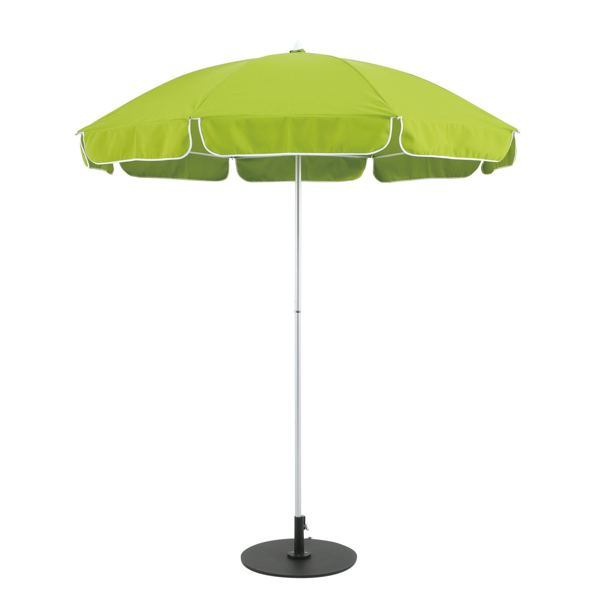

Made in Japan
Parasol
国内で唯一SGマークを取得し、半世紀以上も販売しているロングセラー商品。 日本風土の厳しい環境の中でも耐えうる強度・耐候性です。職人が一本一本手作りしておりますので、 生地の種類 / 天幕の仕様 / フレーム色などのフルカスタムや、破損時に部材単位での修理対応が可能です。
5 Sizes
| 品番 | サイズ | 総高 | 上代 |
|---|---|---|---|
| FP40 （8本骨） | 1,860φ | 2,190㎜ | 37000 |
| FP40 （10本骨） | 1,860φ | 2,170㎜ | ¥41,000～ |
| FP40 （12本骨） | 1,860φ | 2,150㎜ | ¥50,000～ |
| FP45 （12本骨） | 2,100φ | 2,360㎜ | ¥54,000～ |
| FP50 （12本骨） | 2,400φ | 2,520㎜ | ¥67,000～ |